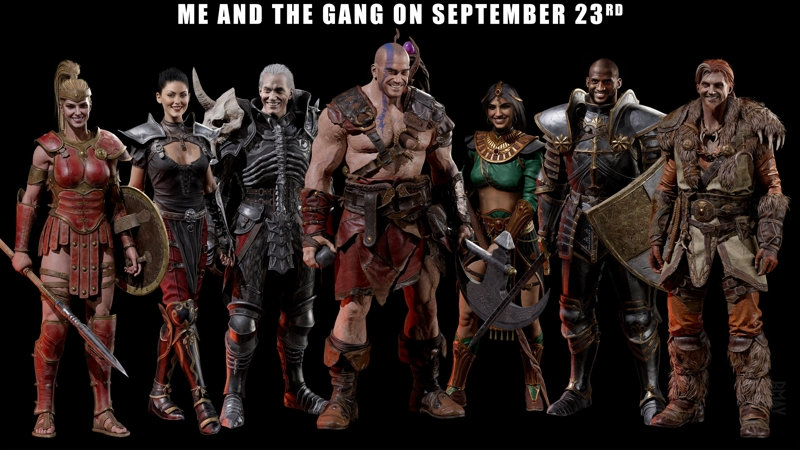

Sur les terres de Sanctuaire
Sur les terres de Sanctuaire
Bonjour! Je me présente très rapidement Joss, 33ans, novice dans le secteur du web developpement.Ce site a pour simple but d'exploité ma compréhension sur les languages HTML5 ainsi que CSS3.Le choix de diablo2 est donc un sujet qui me permet de jouer le role de contenu. Bon, maintenant que les présentation sont faite, je vais sur quelques ligne vous présenté l'aventure partager avec mes compagnons de jeu. Premièrement certains joueurs découvre ce jeu,grace au remaster de Diablo2, intituler Diablo II resurected. Un jeu qui au premiere abord sans connaissance de tout le contenue, jeu il est difficile de mesurer les diverse menace et autre situation qui risque de les mettres en danger. Car autant dire que en mode HC(hardcore) le moindre risque peu mettre fin a votre personnage quelques soit votre équipement, votre or ect...( il est quand même possible de recuperer tout cela dans certaines conditions [ne pas jouer solo, partager vos bien en cas de mort à chaque début de partie...], sauf le personnage ). Bon commençons par les présentation des joueurs: Alex(necro/sorc)/Jess(Pal/Assa/Barb)/Zino(Drood) et moi même(Ama/necro/sorc).
